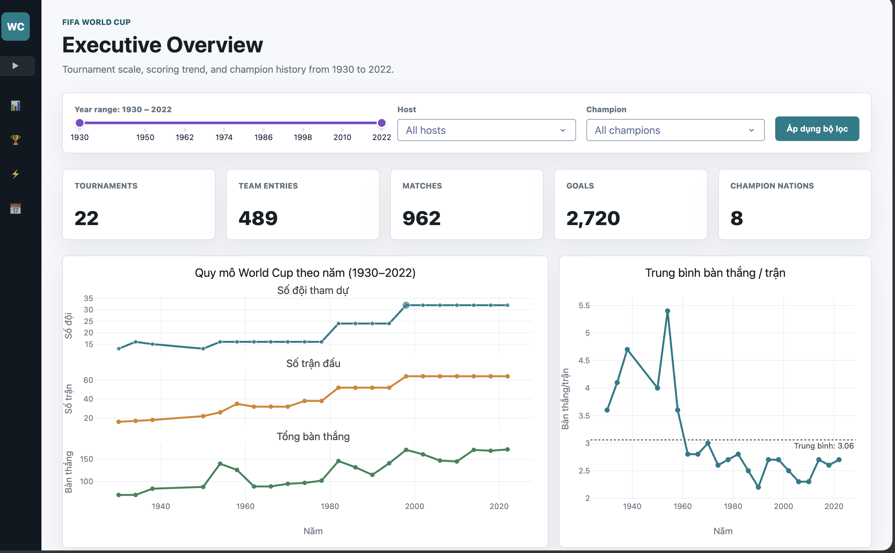
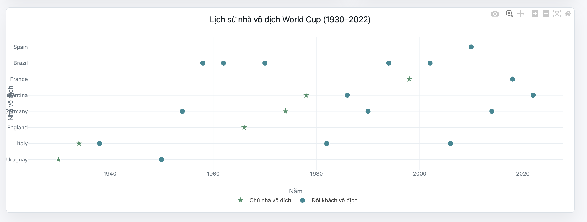
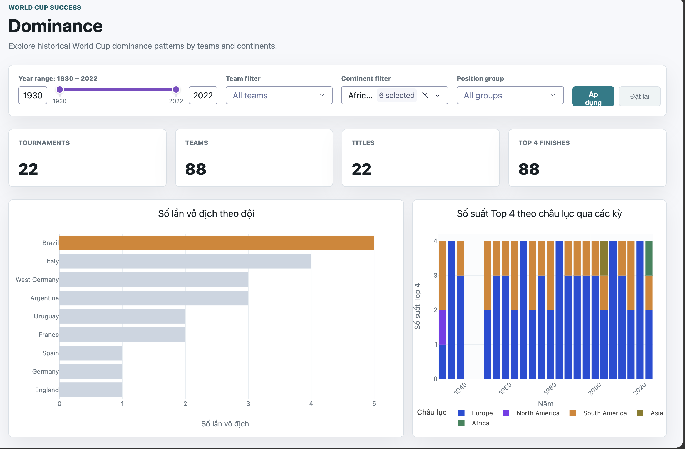
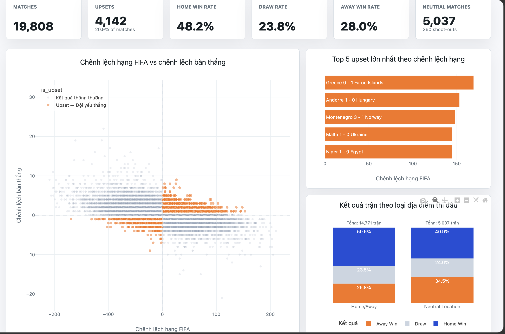
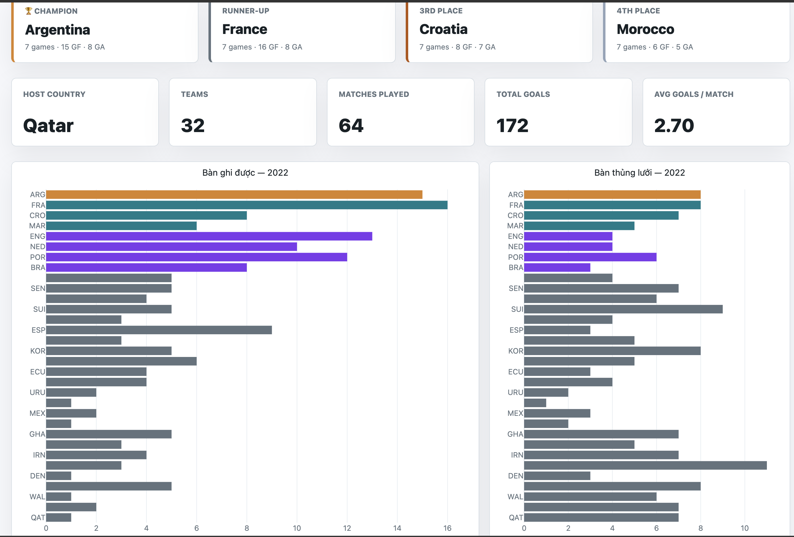
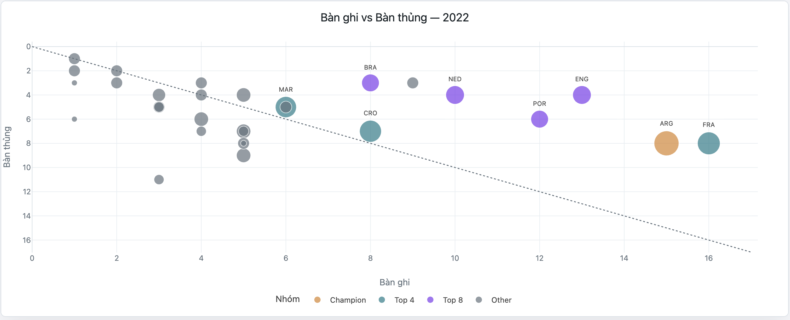

| Nguồn dữ liệu (.csv) | Nội dung chính | Vai trò trong dashboard |
|---|---|---|
| FIFA - World Cup Summary.csv | Năm tổ chức, nước chủ nhà, đội vô địch, số đội tham dự, số trận, số bàn thắng. | Phân tích xu hướng dài hạn |
| FIFA - {year}.csv | Thành tích chi tiết (vị trí, số trận, bàn thắng, điểm số) của từng đội tuyển trong kỳ cụ thể. | Phân tích standings từng kỳ |
| international_matches.csv | Kết quả trận đấu, bảng xếp hạng FIFA của 2 đội, tỷ số, tính chất địa điểm trung lập. | Phân tích competitiveness & upset |



Dùng để biểu thị số lần vô địch của các đội tuyển.
Ưu điểm:Biểu diễn tỷ lệ phân bổ của các khu vực trong Top 4.
Ưu điểm:Cung cấp số liệu thống kê tích lũy chi tiết dạng bảng.
Ưu điểm:

